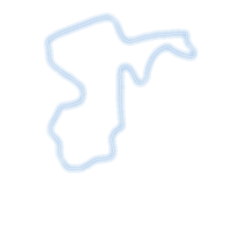
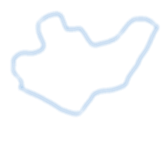

title
工程概况
工程总数：
101
个
变电站总数：
150
个
线路长度：
7324
km
工程统计
主变容量统计
1
江北区
工程数量：12
2
九龙坡
工程数量：10

3
南岸
工程数量：8

4
巴南
工程数量：7
5
江津
工程数量：6
变电站区域排行
江北
12个
巴南区
10个
江津
9个
大渡口
7个
北部
10个
潼南
3个
电线区域排行
渝北
110km
江北
90km
江津
88km
綦江
85km
沙坪坝
79km
万州
70km
变电站工程增量统计
变电站
线路工程增量统计
电线
变电站工程完工时间
电线年份对应表